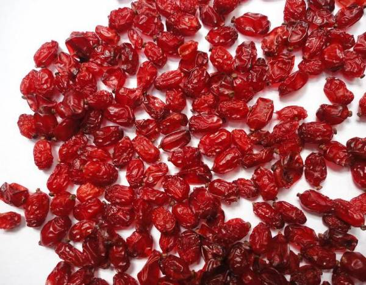

Untitled Document

سلامت تغذیه
زرشک با صدها خواص درمانی با ارزش
زرشک دارای خواص بی نظیری است و همچنین برای زیبایی پوست و مو و سلامت بدن بسیار مفید است، البته اخطارهایی هم در رابطه با مصرف زرشک وجود دارد.
فواید و خواص زرشک برای سلامت بدن و زیبایی پوست و مو
زرشک درختی همیشه سبز و پهن برگ است که میوه های سرخ رنگ بیضی شکل دارد. زرشک برای مصارف دارویی بیشتر از 200 سال است که شناخته شده است.این یک گیاه سم زدا است که حاوی خواص دارویی و آرام بخش عالی است و به مبارزه با چندین بیماری کمک می کند.
شما می توانید به صورت خوراکی زرشک را مصرف کنید و همچنین برای درمان تعدادی از مشکلات سلامتی نیز استفاده می شود. در این بخش از سلامت نمناک بیایید برخی از بهترین فواید برای سلامتی انسان را بررسی کنیم.
ارزش تغذیه ای زرشک:
آن ها منبع غنی ویتامین c هستند. زرشک همچنین حاوی ویتامین B , مانند تیامین و مواد معدنی مثل روی می باشد.
در زرشک عناصری وجود دارد که ارزش دارویی زیادی دارد این ماده شیمیایی به عنوان یک آنتی بیوتیک برای کشتن باکتری ها , قارچ ها و پروتوزوآ است.
میوه , ساقه و پوست ریشه زرشک حاوی مواد شیمیایی مانند آلکالوئیدها و ایزوکوئینولین هستند که به اندازه کافی در درمان بیماری های مختلف موثر هستند.